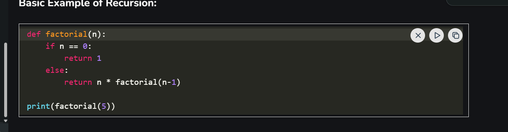
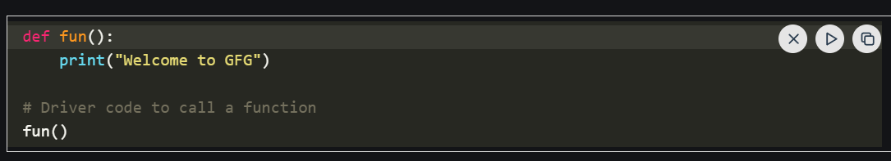

About Python
What is Python?
Python is one of the most popular programming languages. It’s simple to use, packed with features and supported by a wide range of libraries and frameworks. Its clean syntax makes it beginner-friendly.
A high-level language, used in web development, data science, automation, AI and more.
Known for its readability, which means code is easier to write, understand and maintain.
Backed by library support, so we don’t have to build everything from scratch, there’s probably a library that already does what we need.
Key Concepts in Python
Recursion
The process in which a function calls itself directly or indirectly is called recursion and the corresponding function is called a recursive function.
A recursive algorithm takes one step toward solution and then recursively call itself to further move. The algorithm stops once we reach the solution.
Since called function may further call itself, this process might continue forever. So it is essential to provide a base case to terminate this recursion process.
Step1 - Define a base case: Identify the simplest (or base) case for which the solution is known or trivial. This is the stopping condition for the recursion, as it prevents the function from infinitely calling itself.
Step2 - Define a recursive case: Define the problem in terms of smaller subproblems. Break the problem down into smaller versions of itself, and call the function recursively to solve each subproblem.
Step3 - Ensure the recursion terminates: Make sure that the recursive function eventually reaches the base case, and does not enter an infinite loop.
Step4 - Combine the solutions: Combine the solutions of the subproblems to solve the original problem.

Functions
Python Functions is a block of statements that does a specific task. The idea is to put some commonly or repeatedly done task together and make a function so that instead of writing the same code again and again for different inputs, we can do the function calls to reuse code contained in it over and over again.
Benefits of using Functions
- Code reduced
- Reduced Code length
- Increased readability of code
Creating a Function in Python
We can define a function in Python, using the def keyword. We can add any type of functionalities and properties to it as we require. By the following example, we can understand how to write a function in Python. In this way we can create Python function definition by using def keyword.
Calling a Function in Python
After creating a function in Python we can call it by using the name of the functions Python followed by parenthesis containing parameters of that particular function. Below is the example for calling def function Python

OOPS IN PYTHON
Object Oriented Programming is a fundamental concept in Python, empowering developers to build modular, maintainable, and scalable applications. By understanding the core OOP principles (classes, objects, inheritance, encapsulation, polymorphism, and abstraction), programmers can leverage the full potential of Python OOP capabilities to design elegant and efficient solutions to complex problems.
OOPS Concepts in Python
- Class in Python
- Objects in Python
- Polymorphism in Python
- Encapsulation in Python
- Inheritance in Python
- Data Abstraction in Python
The link for detailed documentation of Python is below
CLICK HERE FOR nOOPS IN PYTHON